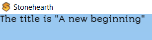
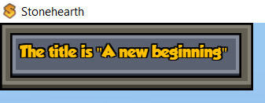

Stonehearth uses HTML, Javascript (JQuery) and CSS (Less) for the UI. For creating UI views we use Ember and Handlebars templates. The version of Ember that the game uses is 1.8, which is a bit outdated, but was also patched over time for specific issues of the game so upgrading it is not straightforward.
You can find the existing UI views and all the related files inside stonehearth/ui.
- Adding a simple UI view
- Showing views conditionally
- Adding to existing views
- Overriding UI files
- More about UI
- About variables inside localization strings
Adding a simple UI view
We'll add a small UI view to explain how are the files structured in the mod.
In your manifest.json, add the "ui" section (at the same level than "aliases" or "mixintos"). Inside it, add the HTML, Javascript and Less files inside the corresponding arrays:
"ui" : { "html" : [ "file(ui/custom_view/custom_view.html)" ], "js" : [ "file(ui/custom_view/custom_ui_view.js)" ], "less" : [ "file(ui/custom_view/custom_ui_view.less)" ] }Just with this, the game will already load our UI files. But we need to define some HTML and Javascript for them to actually show something in the screen.
Edit the HTML file. As mentioned above, Stonehearth uses Ember with handlebars templates. So usually your HTML file will look something like this:
<script type="text/x-handlebars" data-template-name="customView"> </script>Inside the script tag we'll add our HTML, and we can use Handlebars expressions:
<script type="text/x-handlebars" data-template-name="customView"> <div id="customWindow" class="customWindow"> <div class="customTitle"> The title is "{{view.title}}" </div> </div> </script>Edit the Javascript file. In
custom_view.jswe need to define a view. In general, we extendApp.View, but you can extend any other in game view (for example, to create a custom dialog you can extend any of the existing dialogs, that way you'll inherit some functionality).$(document).ready(function() { $(top).on('stonehearthReady', function (_, e) { var view = App.gameView.addView(App.UIModCustomView); }); }); App.UIModCustomView = App.View.extend({ templateName: 'customView', modal: false, closeOnEsc: true, didInsertElement: function() { var self = this; self.set('title', 'A new beginning'); // Add this line if you want your UI view to be draggable self.$().draggable(); } });First we wait until the game is loaded, and call
App.gameView.addViewto add our view to the UI. Notice that at this point, our view is permanently visible, but the images from the main menu, embark screens and loading screen are covering it.We define our view by extending
App.View, add the templateName property and give it the name of our Handlebars template as value.Then in
didInsertElementwe set thetitleproperty, so that it has a value when we display it in our example template.Edit the Less file. Right now, our UI view looks like this:
 We can add some CSS (Less) in the
custom_view.lessfile to make it look better:.customWindow { background-position: center; background-size: 1000% 1000%; background-clip: padding-box; border-width: 9px 9px 13px 9px; border-image: url(http://radiant/stonehearth/ui/root/css/images/gui/panel.png) 9 9 13 9 repeat; border-style: solid; background-image: url(http://radiant/stonehearth/ui/root/css/images/gui/panel.png); padding: 5px; text-align: left; width: 320px; min-height: 50px; } .customTitle { background-size: 1000% 1000%; text-shadow: -2px -2px 0px #000000, 0px -2px 0px #000000, 2px -2px 0px #000000, -2px 0px 0px #000000, 2px 0px 0px #000000, -2px 2px 0px #000000, 0px 2px 0px #000000, 2px 2px 0px #000000; color: #ffc000; font-size: 20px; font-family: 'groboldregular'; position: relative; padding: 5px; border-width: 9px 9px 13px 9px; border-image: url(http://radiant/stonehearth/ui/root/css/images/gui/title.png) 9 9 13 9 repeat; border-style: solid; background-image: url(http://radiant/stonehearth/ui/root/css/images/gui/title.png); background-position: center; background-size: 500% 500%; min-height: 23px; width: 290px; height: 30px; }
Now it looks like this:

You can reuse any image from the game UI for your views, but be careful when defining your styles since it may conflict with existing CSS classes from other game files and get applied to views that it shouldn't.
Showing views conditionally
We can have our view hidden until the player clicks somewhere in the UI (e.g.: we fire an event from a unit frame command and react to it).
For instance, the workshop UI can be shown by clicking in the unit frame command (triggers radiant_show_workshop event) or by directly calling App.workshopManager.toggleWorkshop() (see stonehearth/ui/game/start_menu/start_menu.js).
From stonehearth/ui/game/show_workshop/show_team_workshop.js:
$(document).ready(function () {
App.workshopManager.init();
// Show the crafting UI from the workshops, and from the crafter.
$(top).on("radiant_show_workshop", function (_, e) {
App.workshopManager.toggleWorkshop(e.event_data.crafter_type);
});
$(top).on("radiant_show_workshop_from_crafter", function (_, e) {
App.workshopManager.toggleWorkshop(e.event_data.crafter_type);
});
});
Adding to existing views
All the actions from the start menu are executed from start_menu.js. So if we mixinto a new menu or submenu to it, how can we add a new action to the JS file?
Well, Ember allows to reopen an instance to modify it from other files. From one of our .js files we'd do:
App.StonehearthStartMenuView.reopen({
init: function() {
var self = this;
self.menuActions.create_custom_zone = function(){
self.createCustomZone();
}
self._super();
},
createCustomZone : function() {
var self = this;
// Do something
}
});
Overriding UI files
Sometimes we really need to overwrite a Javascript file from the base game. In that case, we'll use an override in the "overrides" section of the manifest.
Be careful since it may break compatibility with other mods.
More about UI
With Ember we can observe changes on properties and automatically update the UI based on them.
A short example can be seen in stonehearth/ui/game/character_sheets/pet_character_sheet/pet_character_sheet.js. This view is created in stonehearth_client.js and we pass a reference of the pet to it:
_petCharacterSheet: null,
showPetCharacterSheet: function(entity) {
if (this._characterSheet != null && !this._characterSheet.isDestroyed) {
this._characterSheet.destroy();
this._characterSheet = null;
}
if (this._petCharacterSheet != null && !this._petCharacterSheet.isDestroyed) {
this._petCharacterSheet.set('uri', entity);
} else {
this._petCharacterSheet = App.gameView.addView(App.StonehearthPetCharacterSheetView, { uri: entity });
}
},
The function above is called from stonehearth/ui/unit_frame/unit_frame.js:
this.$('#nametag').click(function() {
if ($(this).hasClass('clickable')) {
var isPet = self.get('model.stonehearth:pet');
if (isPet) {
App.stonehearthClient.showPetCharacterSheet(self.get('uri'));
}
}
});
The unit frame listens to the radiant_selection_changed event (it's triggered from the C++ side and returns the selected entity):
var updateUnitFrame = function(data) {
if (!App.gameView) {
return;
}
let unitFrame = App.gameView.getView(App.StonehearthUnitFrameView);
if (unitFrame) {
unitFrame.set('uri', data.selected_entity);
}
};
$(document).ready(function(){
$(top).on("radiant_selection_changed.unit_frame", function (_, data) {
updateUnitFrame(data);
});
$(top).on("radiant_toggle_lock", function(_, data) {
if (!App.gameView) {
return;
}
radiant.call('stonehearth:toggle_lock', data.entity);
});
});
and then it sets the 'uri' property to the selected entity, for us to use in other views. So we can pass the 'uri' property to pet_character_sheet.js and update variables from the Handlebars template depending on it:
_updateNameAndDescription: function() {
var alias = this.get('model.uri');
var description = this.get('model.stonehearth:unit_info.description');
var display_name = this.get('model.stonehearth:unit_info.display_name');
if (alias) {
var catalogData = App.catalog.getCatalogData(alias);
if (!catalogData) {
console.log("no catalog data found for " + alias);
} else {
if (!display_name) {
display_name = catalogData.display_name;
}
if (!description) {
description = catalogData.description;
}
}
}
if (display_name) {
var unit_name = i18n.t(display_name, {self: this.get('model')});
this.set('unit_name', unit_name);
}
this.set('description', description);
}.observes('model.uri'),
We can also define a "components" variable, listing components that we'll find in pets:
components: {
'stonehearth:unit_info': {},
'stonehearth:attributes' : {},
'stonehearth:expendable_resources' : {},
'stonehearth:pet' : {
}
}
and observe changes in them to update our UI view's values:
_onNameChanged: function() {
this._updateNameAndDescription();
}.observes('model.stonehearth:unit_info'),
We can also use actions in our Handlebars templates.
To retrieve the information from a text file (be it a JSON file, HTML, etc), we can do this:
$.get('/stonehearth/data/calendar/calendar_constants.json')
.done(function(json) {
// Do something
});
About variables inside localization strings
As explained before, if a string for the UI needs variables, use [str(my_var_path.my_variable_name)]:
"bulletin_title": "Hello [str(town_name)]!"
Then, when you display the bulletin, you need to supply a variable with a town_name in it. Example for Javascript code:
i18n.t("stonehearth:bulletin_title", {town_name: App.stonehearthClient.settlementName()}).
In Lua we can also pass variables when updating text for the UI:
ai:set_status_text_key('stonehearth:ai.actions.status_text.chase_entity', { target = args.target })
All strings are displayed and localized in the UI (Javascript), so you need to know what variables your string needs when being displayed and pass those variables into your string when calling i18n.
Example from an HTML file -- this is how unit_frame.html displays the name of an entity:
{{i18n_key view.display_name self=view.model}}
i18n_key is a new Ember helper that will resolve the first parameter into a string key (so it knows the first parameter is not a flat string, but a variable), and all optional parameters passed in via the param_name=param_value are the variables that the string will use.
In this case, to display a unit's name, we pass in self=this, which says the parameter "self" is the entity we're tracing. That way, we can make a unit's display_name look like: "Chieftan [str(self.stonehearth:unit_info.custom_name)]", which will display the entity's randomly generated custom name with a Chieftan title around it. Use cached off display names for displaying the name of an entity if that entity can die (e.g.: for boss names in boss death dialogs).
To pass in the self parameter in Javascript, do:
i18n.t(this.get('unit_info.display_name'), {self: this});
If your string needs a substring that needs to be localized, use i18n(stonehearth:my.loc.var.path) in the en.json:
"bulletin_message": "I would like to give you a i18n(stonehearth:entities.food.corn.corn_basket.display_name)!"